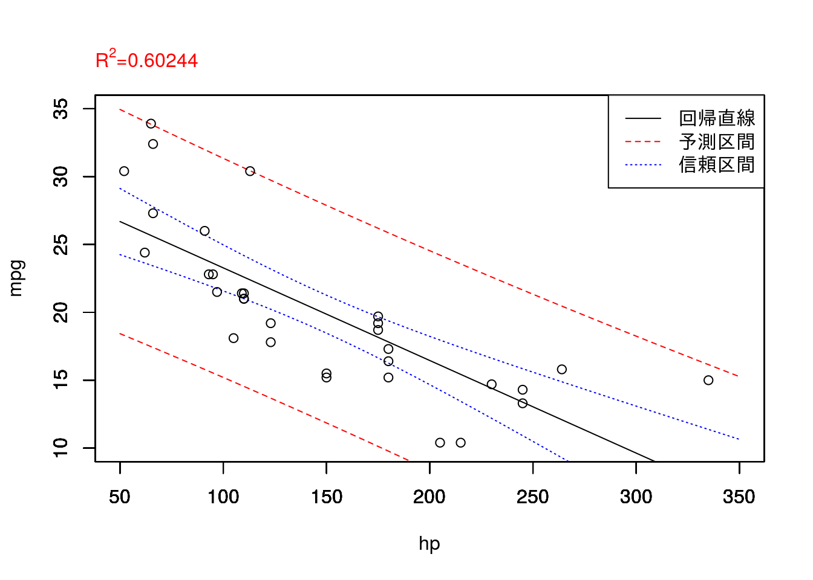
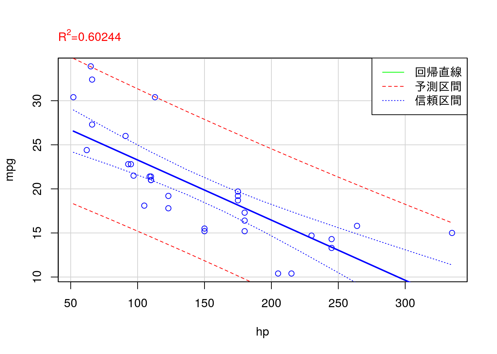
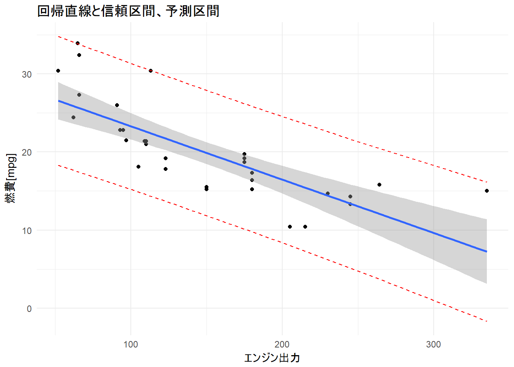
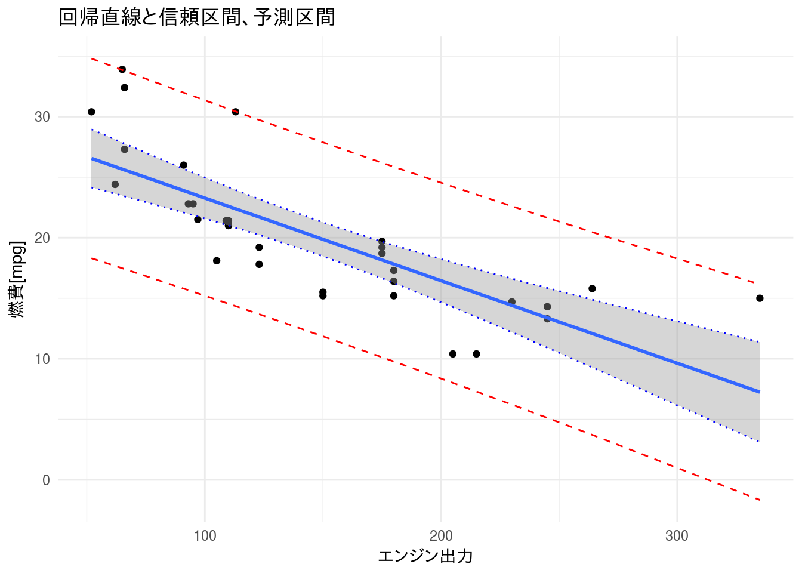

信頼区間と予測区間
線形単回帰分析におけるモデルの可視化手法です。モデルを予測に利用するにはモデル単体だけではなく信頼区間や予測区間も考慮する必要があります。ExcelやR Commanderでは信頼区間や予測区間を可視化することは計算も含めて比較的手間がかかりますが、R のスクリプトを用いることで比較的簡単に描画できます。
R で信頼区間や予測区間を描画する方法は利用するパッケージによりいくつか方法がありますので、基本的な方法をいくつか紹介します。
必要なパッケージ
本ページのコードを実行するには標準パッケージ以外に以下の追加パッケージを読み込んでおく必要があります。
| Package | Description |
|---|---|
| tidyversse | Easily Install and Load the ‘Tidyverse’ |
標準パッケージを用いる方法
高水準作画関数による描画
# 組込データセット"mtcars"を読み込む
data(mtcars, package = "datasets")
# 線形回帰を計算する
res.lm <- lm(mpg ~ hp, data = mtcars)
# 横軸の区間範囲はグラフから読み取った値とする
xmin <- 50
xmax <- 350
step <- 10
ymin <- 10
ymax <- 35
new <- data.frame(hp = seq(xmin, xmax, step))
# 予測区間を計算する
pred.lm <- predict(res.lm, new, interval = "prediction")
# 信頼区間を計算する
conf.lm <- predict(res.lm, new, interval = "confidence")
# プロットの準備
x.plot <- seq(xmin, xmax, step)
# 回帰直線をプロットする
plot(x.plot, pred.lm[, 1], type = "l", xlim = c(xmin, xmax), ylim = c(ymin, ymax),
xlab = "", ylab = "")
# 上書きを許可する
par(new = TRUE)
# 予測範囲(下限)をプロットする
plot(x.plot, pred.lm[, 2], type = "l", xlim = c(xmin, xmax), ylim = c(ymin, ymax),
lty = 2, xlab = "", ylab = "", col = "red")
# 上書きを許可する
par(new = TRUE)
# 信頼範囲(下限)をプロットする
plot(x.plot, conf.lm[, 2], type = "l", xlim = c(xmin, xmax), ylim = c(ymin, ymax),
lty = 3, xlab = "", ylab = "", col = "blue")
# 上書きを許可する
par(new = TRUE)
# 予測範囲(上限)をプロットする
plot(x.plot, pred.lm[, 3], type = "l", xlim = c(xmin, xmax), ylim = c(ymin, ymax),
lty = 2, xlab = "", ylab = "", col = "red")
# 上書きを許可する
par(new = TRUE)
# 信頼範囲(上限)をプロットする
plot(x.plot, conf.lm[, 3], type = "l", xlim = c(xmin, xmax), ylim = c(ymin, ymax),
lty = 3, xlab = "", ylab = "", col = "blue")
# 上書きを許可する
par(new = TRUE)
# 散布図をプロットする
plot(mtcars$hp, mtcars$mpg, type = "p", xlim = c(xmin, xmax), ylim = c(ymin, ymax),
lty = 2, ylab = "mpg", xlab = "hp")
# 上書きを禁止する
par(new = FALSE)
# R^2の値を表示する
mtext(substitute(paste(R^2, "=", x),
list(x = round(summary(res.lm)$r.squared, digits = 5))),
line = 1, col = "red", adj = 0)
# 凡例を描画する
leglabels <- c("回帰直線", "予測区間", "信頼区間")
leglty <- c(1, 2, 3)
legcol <- c("black", "red", "blue")
legend("topright", legend = leglabels, lty = leglty, col = legcol, lwd = 1)
低水準作画関数による描画
# 組込データセット"mtcars"を読み込む
data(mtcars, package = "datasets")
# Rcmdrで散布図を作画する（周辺箱ひげ図は描画しない）
scatterplot(mpg ~ hp, reg.line = lm, smooth = FALSE, spread = FALSE,
id.method = 'mahal', id.n = 2, boxplots = FALSE, span = 0.5,
data = mtcars)
# 線形回帰直線を計算する(Rcmderで計算しても可)
result.lm <- lm(mpg ~ hp, data = mtcars)
# 予測区間は最小値と最大値を10等分したものとする
min <- min(mtcars$hp)
max <- max(mtcars$hp)
step <- abs(max - min) / 10
new <- data.frame(hp = seq(min, max, step))
# 予測区間を計算する
result.pre <- predict(result.lm, new, interval = "prediction")
# 信頼区間を計算する
result.con <- predict(result.lm, new, interval = "confidence")
# 予測区間を散布図に上書きする
lines(new[, 1], result.pre[, 2], col = "red", lty = 2) # 下側
lines(new[, 1], result.pre[, 3], col = "red", lty = 2) # 上側
# 信頼区間を散布図に上書きする
lines(new[, 1], result.con[, 2], col = "blue", lty = 3) # 下側
lines(new[, 1], result.con[, 3], col = "blue", lty = 3) # 上側
# R^2の値を表示する
mtext(substitute(paste(R^2, "=", x),
list(x = round(summary(result.lm)$r.squared, digits = 5))),
line = 1, col = "red", adj = 0)
# 凡例を描画する
leglabels <- c("回帰直線", "予測区間", "信頼区間")
leglty <- c(1, 2, 3)
legcol <- c("green", "red", "blue")
legend("topright", legend = leglabels, lty = leglty, col = legcol, lwd = 1)
追加パッケージを用いる方法
dplyrパッケージとggplot2パッケージを用いる方法です。すべての処理をパイプでつなげて処理します。
予測区間のみを上書きする
ggplot2::geom_smooth関数は信頼区間を描画する機能がありますので予測区間のみを計算して上書き描画します。
data(mtcars, package = "datasets")
mtcars %>%
lm(mpg ~ hp, data = .) %>%
predict(interval = "prediction") %>%
broom::tidy() %>%
dplyr::bind_cols(mtcars, .) %>%
ggplot2::ggplot(ggplot2::aes(x = hp)) +
ggplot2::geom_point(aes(y = mpg)) +
ggplot2::geom_smooth(aes(y = mpg), method = "lm", se = TRUE) +
ggplot2::geom_line(aes(y = lwr), linetype = 2, colour = 2) +
ggplot2::geom_line(aes(y = upr), linetype = 2, colour = 2) +
ggplot2::xlab("エンジン出力") + ggplot2::ylab("燃費[mpg]") +
ggplot2::ggtitle("回帰直線と信頼区間、予測区間") +
ggplot2::theme_minimal()
予測区間と信頼区間を上書きする
信頼区間も計算して上書き描画します。
data(mtcars, package = "datasets")
# 予測区間を計算しTidy Data化する
pred_mtcars <- mtcars %>%
lm(mpg ~ hp, data = .) %>%
predict(interval = "prediction") %>%
broom::tidy() %>%
dplyr::select(pred_lwr = lwr, pred_upr = upr)
# 信頼区間を計算しTidy Data化する
conf_mtcars <- mtcars %>%
lm(mpg ~ hp, data = .) %>%
predict(interval = "confidence") %>%
broom::tidy() %>%
dplyr::select(conf_lwr = lwr, conf_upr = upr)
# 予測区間と信頼区間を結合し
mtcars %>%
dplyr::bind_cols(pred_mtcars) %>% # 予測区間を結合する
dplyr::bind_cols(conf_mtcars) %>% # 信頼区間を結合する
ggplot2::ggplot(ggplot2::aes(x = hp)) +
ggplot2::geom_point(aes(y = mpg)) +
ggplot2::geom_smooth(aes(y = mpg), method = "lm", se = TRUE) +
ggplot2::geom_line(aes(y = pred_lwr), linetype = 2, colour = 2) +
ggplot2::geom_line(aes(y = pred_upr), linetype = 2, colour = 2) +
ggplot2::geom_line(aes(y = conf_lwr), linetype = 3, colour = 4) +
ggplot2::geom_line(aes(y = conf_upr), linetype = 3, colour = 4) +
ggplot2::xlab("エンジン出力") + ggplot2::ylab("燃費[mpg]") +
ggplot2::ggtitle("回帰直線と信頼区間、予測区間") +
ggplot2::theme_minimal()
 CC BY-NC-SA 4.0 , Sampo Suzuki [2018-05-30 17:33(JST)]
CC BY-NC-SA 4.0 , Sampo Suzuki [2018-05-30 17:33(JST)]